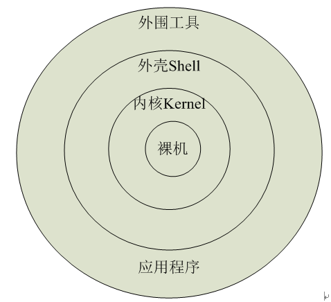

# linux 常用命令
# 前言
本人平时学习及收集内容，欢迎参入一起讨论。
# 内容
# 一、Linux 特点
开放性、多用户、多任务、良好的用户界面、设备独立性、丰富的网络功能、可靠的系统安全、良好的可移植性
# 二、Linux 系统组成

# 三、Linux 内核主要功能
与计算机硬件进行交互，实现对硬件编程控制和接口操作，调度对硬件资源对访问，并为计算机上的用户程序提供一个高级的执行环境和对硬件虚拟接口
按功能模块分为： 进程调度、文件管理、内存管理、进程间通信和网络接口
# 四、常见 Shell 程序
- Bourne Shell(SH)： 最老、使用最广泛
- Korn Shell(KSH)： 对 Bourne Shell 的扩充，兼容 Bourne Shell
- C Shell(CSH)： 语法与 C 语言类式，功能强大，但与 Bourne Shell 不兼容
- Bourne Again Shell(BASH)： 是自由软件基金会（GNU）开发的一个 Shell，它是 Linux 系统中默认的 Shell，Bash 不但与 Bourne Shell 兼容，还继承了 Korn Shell、C Shell 的优点
# 五、Linux 基本命令
# 5.1 文件目录操作命令
ls列出目标目录中所有的子目录和文件cd切换当前目录至dirNamepwd查看“当前工作目录”的完整路径mkdir在指定位置创建以 DirName(指定的文件名)命名的文件夹或目录。rm删除一个目录中的一个或多个文件或目录，如果没有使用-r选项，则rm不会删除目录。rmdir该命令从一个目录中删除一个或多个子目录项，删除某目录时也必须具有对父目录的写权限。mv将文件重命名或将其移至一个新的目录中。cp将源文件复制至目标文件，或将多个源文件复制至目标目录。touch可更改文档或目录的日期时间，包括存取时间和更改时间。cat一次显示整个文件nl读取 File 参数（缺省情况下标准输入），计算输入中的行号，将计算过的行号写入标准输出。more查看文件里的内容。lessless 与 more 类似，但使用 less 可以随意浏览文件head用来显示档案的开头至标准输出中，默认 head 命令打印其相应文件的开头 10 行。tail用于显示指定文件末尾内容，不指定文件时，作为输入信息进行处理。
# 5.1.1 ls 命令
- 命令格式：
ls [选项] [目录名] - 命令功能： 列出目标目录中所有的子目录和文件
- 常用参数：
-a,-all 列出当前文件夹中所有内容，包含以“.”开头的文件
-o 列出当前文件夹中所有内容，含详细信息，但不列出group
-l 同上，含group信息
-t 按更改时间排序
-v 近处本先后排序
2
3
4
5
# 5.1.2 cd 命令
- 命令格式：
cd [目录名] - 命令功能： 切换当前目录至 dirName
- 常用参数：
/ 进入系统根目录；
~ 进入用户主目录；
- 返回进入此目录之前所在的目录
.. 返回上级目录
2
3
4
# 5.1.3 pwd 命令
- 命令格式：
pwd [选项] - 功能： 查看“当前工作目录”的完整路径
- 常用参数： 一般情况下不带任何参数
# 5.1.4 mkdir 命令
- 命令格式：
mkdir [选项] 目录... - 功能： 通过 mkdir 命令可以实现在指定位置创建以 DirName(指定的文件名)命名的文件夹或目录。要创建文件夹或目录的用户必须对所创建的文件父文件夹具有写权限。并且，所创建的文件夹（目录）不能与其父目录（即父文件夹）中的文件名重名，即同一个目录下不能有同名的（区分大小写）。
- 常用参数：
-Z：设置安全上下文，当使用SELinux时有效；
-m<目标属性>或--mode<目标属性>建立目录的同时设置目录的权限；
-p或--parents 若所要建立目录的上层目录目前尚未建立，则会一并建立上层目录；
--version 显示版本信息。
2
3
4
# 5.1.5 rm 命令
- 命令格式：
rm [选项] 文件... - 功能： 删除一个目录中的一个或多个文件或目录，如果没有使用-r 选项，则 rm 不会删除目录。如果使用 rm 来删除文件，通常仍可以将该文件恢复原状。
- 常用参数：
-d：直接把欲删除的目录的硬连接数据删除成0，删除该目录；
-f：强制删除文件或目录；
-i：删除已有文件或目录之前先询问用户；
-r或-R：递归处理，将指定目录下的所有文件与子目录一并处理；
--preserve-root：不对根目录进行递归操作；
-v：显示指令的详细执行过程。
2
3
4
5
6
7
# 5.1.6 rmdir 命令
- 命令格式：
rmdir[选项]... 目录... - 功能： 该命令从一个目录中删除一个或多个子目录项，删除某目录时也必须具有对父目录的写权限。
- 常用参数：
-p或--parents：删除指定目录后，若该目录的上层目录已变成空目录，则将其一并删除；
--ignore-fail-on-non-empty：此选项使rmdir命令忽略由于删除非空目录时导致的错误信息；
-v或-verboes：显示命令的详细执行过程；
--help：显示命令的帮助信息；
--version：显示命令的版本信息。
2
3
4
5
# 5.1.7 mv 命令
- 命令格式：
mv[选项] 源文件或目录 目录文件或目录 - 功能： 视 mv 命令中第二个参数类型的不同（是目标文件还是目标目录），mv 命令将文件重命名或将其移至一个新的目录中。当第二个参数类型是文件时，mv 命令完成文件重命名，此时，源文件只能有一个（也可以是源目录名），它将所给的源文件或目录重命名为给定的目标文件名。当第二个参数是已存在的目录名称时，源文件或目录参数可以有多个，mv 命令将各参数指定的源文件均移至目标目录中。在跨文件系统移动文件时，mv 先拷贝，再将原有文件删除，而链至该文件的链接也将丢失。
- 常用参数：
--backup=<备份模式>：若需覆盖文件，则覆盖前先行备份；
-b：当文件存在时，覆盖前，为其创建一个备份；
-f：若目标文件或目录与现有的文件或目录重复，则直接覆盖现有的文件或目录；
-i：交互式操作，覆盖前先行询问用户，如果源文件与目标文件或目标目录中的文件同名，则询问用户是否覆盖目标文件。用户输入”y”，表示将覆盖目标文件；输入”n”，表示取消对源文件的移动。这样可以避免误将文件覆盖。
--strip-trailing-slashes：删除源文件中的斜杠“/”；
-S<后缀>：为备份文件指定后缀，而不使用默认的后缀；
--target-directory=<目录>：指定源文件要移动到目标目录；
-u：当源文件比目标文件新或者目标文件不存在时，才执行移动操作。
2
3
4
5
6
7
8
# 5.1.8 cp 命令
- 命令格式：
cp [选项] 源 目的 - 功能： 将源文件复制至目标文件，或将多个源文件复制至目标目录。
- 常用参数：
-a：此参数的效果和同时指定"-dpR"参数相同；
-d：当复制符号连接时，把目标文件或目录也建立为符号连接，并指向与源文件或目录连接的原始文件或目录；
-f：强行复制文件或目录，不论目标文件或目录是否已存在；
-i：覆盖既有文件之前先询问用户；
-l：对源文件建立硬连接，而非复制文件；
-p：保留源文件或目录的属性；
-R/r：递归处理，将指定目录下的所有文件与子目录一并处理；
-s：对源文件建立符号连接，而非复制文件；
-u：使用这项参数后只会在源文件的更改时间较目标文件更新时或是名称相互对应的目标文件并不存在时，才复制文件；
-S：在备份文件时，用指定的后缀“SUFFIX”代替文件的默认后缀；
-b：覆盖已存在的文件目标前将目标文件备份；
-v：详细显示命令执行的操作。
2
3
4
5
6
7
8
9
10
11
12
# 5.1.9 touch 命令
- 命令格式：
touch [选项] 文件 - 功能： touch 命令参数可更改文档或目录的日期时间，包括存取时间和更改时间。
- 常用参数：
-a：或--time=atime或--time=access或--time=use 只更改存取时间；
-c：或--no-create 不建立任何文件；
-d：<时间日期> 使用指定的日期时间，而非现在的时间；
-f：此参数将忽略不予处理，仅负责解决BSD版本touch指令的兼容性问题；
-m：或--time=mtime或--time=modify 只更该变动时间；
-r：<参考文件或目录> 把指定文件或目录的日期时间，统统设成和参考文件或目录的日期时间相同；
-t：<日期时间> 使用指定的日期时间，而非现在的时间；
--help：在线帮助；
--version：显示版本信息。
2
3
4
5
6
7
8
9
# 5.1.10 cat 命令
- 命令格式：
cat [选项] [文件] - 功能：
- 一次显示整个文件:cat filename
- 从键盘创建一个文件:cat > filename 只能创建新文件,不能编辑已有文件.
- 将几个文件合并为一个文件:cat file1 file2 > file
- 常用参数：
-n或-number：有1开始对所有输出的行数编号；
-b或--number-nonblank：和-n相似，只不过对于空白行不编号；
-s或--squeeze-blank：当遇到有连续两行以上的空白行，就代换为一行的空白行；
-A：显示不可打印字符，行尾显示“$”；
-e：等价于"-vE"选项；
-t：等价于"-vT"选项；
2
3
4
5
6
# 5.1.11 nl 命令
- 命令格式：
nl [选项] [文件] - 功能： nl 命令读取 File 参数（缺省情况下标准输入），计算输入中的行号，将计算过的行号写入标准输出。 在输出中，nl 命令根据您在命令行中指定的标志来计算左边的行。 输入文本必须写在逻辑页中。每个逻辑页有头、主体和页脚节（可以有空节）。 除非使用 -p 标志，nl 命令在每个逻辑页开始的地方重新设置行号。 可以单独为头、主体和页脚节设置行计算标志（例如，头和页脚行可以被计算然而文本行不能）。
- 常用参数：
-b ：指定行号指定的方式，主要有两种：
-b a ：表示不论是否为空行，也同样列出行号(类似 cat -n)；
-b t ：如果有空行，空的那一行不要列出行号(默认值)；
-n ：列出行号表示的方法，主要有三种：
-n ln ：行号在萤幕的最左方显示；
-n rn ：行号在自己栏位的最右方显示，且不加 0 ；
-n rz ：行号在自己栏位的最右方显示，且加 0 ；
-w ：行号栏位的占用的位数。
-p ：在逻辑定界符处不重新开始计算。
2
3
4
5
6
7
8
9
10
11
# 5.1.12 more 命令
- 命令格式：
more [-dlfpcsu ] [-num ] [+/ pattern] [+ linenum] [file ... ] - 功能： more 命令和 cat 的功能一样都是查看文件里的内容，但有所不同的是 more 可以按页来查看文件的内容，还支持直接跳转行等功能。
- 常用参数：
-<数字>：指定每屏显示的行数；
-d：显示“[press space to continue,'q' to quit.]”和“[Press 'h' for instructions]”；
-c：不进行滚屏操作。每次刷新这个屏幕；
-s：将多个空行压缩成一行显示；
-u：禁止下划线；
+<数字>：从指定数字的行开始显示。
2
3
4
5
6
- 常用操作命令
Enter 向下n行，需要定义。默认为1行
Ctrl+F 向下滚动一屏
空格键 向下滚动一屏
Ctrl+B 返回上一屏
= 输出当前行的行号
：f 输出文件名和当前行的行号
V 调用vi编辑器
!命令 调用Shell，并执行命令
q 退出more
2
3
4
5
6
7
8
9
# 5.1.13 less 命令
- 命令格式：
[参数] 文件 - 功能： less 与 more 类似，但使用 less 可以随意浏览文件，而 more 仅能向前移动，却不能向后移动，而且 less 在查看之前不会加载整个文件。
- 常用参数：
-e：文件内容显示完毕后，自动退出；
-f：强制显示文件；
-g：不加亮显示搜索到的所有关键词，仅显示当前显示的关键字，以提高显示速度；
-l：搜索时忽略大小写的差异；
-N：每一行行首显示行号；
-s：将连续多个空行压缩成一行显示；
-S：在单行显示较长的内容，而不换行显示；
-x<数字>：将TAB字符显示为指定个数的空格字符。
2
3
4
5
6
7
8
- 常用操作命令：
b 向后翻一页
d 向后翻半页
h 显示帮助界面
Q 退出less 命令
u 向前滚动半页
y 向前滚动一行
空格键 滚动一行
回车键 滚动一页
[pagedown]： 向下翻动一页
[pageup]： 向上翻动一页
2
3
4
5
6
7
8
9
10
# 5.1.14 head 命令
- 命令格式：
head [参数]... [文件]... - 功能： head 用来显示档案的开头至标准输出中，默认 head 命令打印其相应文件的开头 10 行。
- 常用参数：
-n<数字>：指定显示头部内容的行数；
-c<字符数>：指定显示头部内容的字符数；
-v：总是显示文件名的头信息；
-q：不显示文件名的头信息。
2
3
4
# 5.1.15 tail 命令
- 命令格式：
tail[必要参数][选择参数][文件] - 功能： 用于显示指定文件末尾内容，不指定文件时，作为输入信息进行处理。常用查看日志文件。
- 常用参数：
--retry：即是在tail命令启动时，文件不可访问或者文件稍后变得不可访问，都始终尝试打开文件。使用此选项时需要与选项“——follow=name”连用；
-c<N>或——bytes=<N>：输出文件尾部的N（N为整数）个字节内容；
-f<name/descriptor>或；--follow<nameldescript>：显示文件最新追加的内容。“name”表示以文件名的方式监视文件的变化。“-f”与“-fdescriptor”等效；
-F：与选项“-follow=name”和“--retry"连用时功能相同；
-n<N>或——line=<N>：输出文件的尾部N（N位数字）行内容。
--pid=<进程号>：与“-f”选项连用，当指定的进程号的进程终止后，自动退出tail命令；
-q或——quiet或——silent：当有多个文件参数时，不输出各个文件名；
-s<秒数>或——sleep-interal=<秒数>：与“-f”选项连用，指定监视文件变化时间隔的秒数；
-v或——verbose：当有多个文件参数时，总是输出各个文件名；
--help：显示指令的帮助信息；
--version：显示指令的版本信息。
2
3
4
5
6
7
8
9
10
11
# 5.2 文件查找命令
which查看可执行文件的位置。whereis查看文件的位置。locate配合数据库查看文件位置。find实际搜寻硬盘查询文件名称。
# 5.2.1 which 命令
- 命令格式： which 可执行文件名称
- 功能： which 指令会在 PATH 变量指定的路径中，搜索某个系统命令的位置，并且返回第一个搜索结果。
- 常用参数：
-n<文件名长度>：制定文件名长度，指定的长度必须大于或等于所有文件中最长的文件名；
-p<文件名长度>：与-n参数相同，但此处的<文件名长度>包含了文件的路径；
-w：指定输出时栏位的宽度；
-V：显示版本信息。
2
3
4
# 5.2.2 whereis 命令
- 命令格式：
whereis [-bmsu] [BMS 目录名 -f ] 文件名 - 功能：
- whereis 命令是定位可执行文件、源代码文件、帮助文件在文件系统中的位置。这些文件的属性应属于原始代码，二进制文件，或是帮助文件。
- whereis 程序还具有搜索源代码、指定备用搜索路径和搜索不寻常项的能力。
- 常用参数：
-b：只查找二进制文件；
-B<目录>：只在设置的目录下查找二进制文件；
-f：不显示文件名前的路径名称；
-m：只查找说明文件；
-M<目录>：只在设置的目录下查找说明文件；
-s：只查找原始代码文件；
-S<目录>只在设置的目录下查找原始代码文件；
-u：查找不包含指定类型的文件。
2
3
4
5
6
7
8
# 5.2.3 locate 命令
命令格式：
Locate [选择参数] [样式]功能：
- locate 命令可以在搜寻数据库时快速找到档案，数据库由 updatedb 程序来更新，updatedb 是由 cron daemon 周期性建立的，locate 命令在搜寻数据库时比由整个由硬盘资料来搜寻资料来得快，但较差劲的是 locate 所找到的档案若是最近才建立或 刚更名的，可能会找不到，在内定值中，updatedb 每天会跑一次，可以由修改 crontab 来更新设定值。(etc/crontab)
- locate 指定用在搜寻符合条件的档案，它会去储存档案与目录名称的数据库内，寻找合乎范本样式条件的档案或目录录，可以使用特殊字元（如”” 或”?”等）来指定范本样式，如指定范本为 kcpaner, locate 会找出所有起始字串为 kcpa 且结尾为 ner 的档案或目录，如名称为 kcpartner 若目录录名称为 kcpa_ner 则会列出该目录下包括 子目录在内的所有档案。
- locate 指令和 find 找寻档案的功能类似，但 locate 是透过 update 程序将硬盘中的所有档案和目录资料先建立一个索引数据库，在 执行 loacte 时直接找该索引，查询速度会较快，索引数据库一般是由操作系统管理，但也可以直接下达 update 强迫系统立即修改索引数据库。
常用参数：
-d<目录>或--database=<目录>：指定数据库所在的目录；
-u：更新slocate数据库；
--help：显示帮助；
--version：显示版本信息。
2
3
4
# 5.2.4 find 命令
- 命令格式：
find pathname -options [-print -exec -ok ...] - 功能： 用于在文件树种查找文件，并作出相应的处理
- 常用参数：
-amin<分钟>：查找在指定时间曾被存取过的文件或目录，单位以分钟计算；
-anewer<参考文件或目录>：查找其存取时间较指定文件或目录的存取时间更接近现在的文件或目录；
-atime<24小时数>：查找在指定时间曾被存取过的文件或目录，单位以24小时计算；
-cmin<分钟>：查找在指定时间之时被更改过的文件或目录；
-cnewer<参考文件或目录>查找其更改时间较指定文件或目录的更改时间更接近现在的文件或目录；
-ctime<24小时数>：查找在指定时间之时被更改的文件或目录，单位以24小时计算；
-daystart：从本日开始计算时间；
-depth：从指定目录下最深层的子目录开始查找；
-expty：寻找文件大小为0 Byte的文件，或目录下没有任何子目录或文件的空目录；
-exec<执行指令>：假设find指令的回传值为True，就执行该指令；
-false：将find指令的回传值皆设为False；
-fls<列表文件>：此参数的效果和指定“-ls”参数类似，但会把结果保存为指定的列表文件；
-follow：排除符号连接；
-fprint<列表文件>：此参数的效果和指定“-print”参数类似，但会把结果保存成指定的列表文件；
-fprint0<列表文件>：此参数的效果和指定“-print0”参数类似，但会把结果保存成指定的列表文件；
-fprintf<列表文件><输出格式>：此参数的效果和指定“-printf”参数类似，但会把结果保存成指定的列表文件；
-fstype<文件系统类型>：只寻找该文件系统类型下的文件或目录；
-gid<群组识别码>：查找符合指定之群组识别码的文件或目录；
-group<群组名称>：查找符合指定之群组名称的文件或目录；
-help或——help：在线帮助；
-ilname<范本样式>：此参数的效果和指定“-lname”参数类似，但忽略字符大小写的差别；
-iname<范本样式>：此参数的效果和指定“-name”参数类似，但忽略字符大小写的差别；
-inum<inode编号>：查找符合指定的inode编号的文件或目录；
-ipath<范本样式>：此参数的效果和指定“-path”参数类似，但忽略字符大小写的差别；
-iregex<范本样式>：此参数的效果和指定“-regexe”参数类似，但忽略字符大小写的差别；
-links<连接数目>：查找符合指定的硬连接数目的文件或目录；
-iname<范本样式>：指定字符串作为寻找符号连接的范本样式；
-ls：假设find指令的回传值为Ture，就将文件或目录名称列出到标准输出；
-maxdepth<目录层级>：设置最大目录层级；
-mindepth<目录层级>：设置最小目录层级；
-mmin<分钟>：查找在指定时间曾被更改过的文件或目录，单位以分钟计算；
-mount：此参数的效果和指定“-xdev”相同；
-mtime<24小时数>：查找在指定时间曾被更改过的文件或目录，单位以24小时计算；
-name<范本样式>：指定字符串作为寻找文件或目录的范本样式；
-newer<参考文件或目录>：查找其更改时间较指定文件或目录的更改时间更接近现在的文件或目录；
-nogroup：找出不属于本地主机群组识别码的文件或目录；
-noleaf：不去考虑目录至少需拥有两个硬连接存在；
-nouser：找出不属于本地主机用户识别码的文件或目录；
-ok<执行指令>：此参数的效果和指定“-exec”类似，但在执行指令之前会先询问用户，若回答“y”或“Y”，则放弃执行命令；
-path<范本样式>：指定字符串作为寻找目录的范本样式；
-perm<权限数值>：查找符合指定的权限数值的文件或目录；
-print：假设find指令的回传值为Ture，就将文件或目录名称列出到标准输出。格式为每列一个名称，每个名称前皆有“./”字符串；
-print0：假设find指令的回传值为Ture，就将文件或目录名称列出到标准输出。格式为全部的名称皆在同一行；
-printf<输出格式>：假设find指令的回传值为Ture，就将文件或目录名称列出到标准输出。格式可以自行指定；
-prune：不寻找字符串作为寻找文件或目录的范本样式;
-regex<范本样式>：指定字符串作为寻找文件或目录的范本样式；
-size<文件大小>：查找符合指定的文件大小的文件；
-true：将find指令的回传值皆设为True；
-typ<文件类型>：只寻找符合指定的文件类型的文件；
-uid<用户识别码>：查找符合指定的用户识别码的文件或目录；
-used<日数>：查找文件或目录被更改之后在指定时间曾被存取过的文件或目录，单位以日计算；
-user<拥有者名称>：查找符和指定的拥有者名称的文件或目录；
-version或——version：显示版本信息；
-xdev：将范围局限在先行的文件系统中；
-xtype<文件类型>：此参数的效果和指定“-type”参数类似，差别在于它针对符号连接检查。
2
3
4
5
6
7
8
9
10
11
12
13
14
15
16
17
18
19
20
21
22
23
24
25
26
27
28
29
30
31
32
33
34
35
36
37
38
39
40
41
42
43
44
45
46
47
48
49
50
51
52
53
54
55
# 5.3 打包跟压缩文件
- tar 命令
- gzip 命令
- zip 命令
- rar 命令
- gz 命令
- tar.gz 命令和 tgz 命令
# 5.3.1 tar 命令
- 命令格式：
tar[必要参数][选择参数][文件] - 功能： 用来压缩和解压文件。tar 本身不具有压缩功能。他是调用压缩功能实现的
- 常用参数：
-A或--catenate：新增文件到以存在的备份文件；
-B：设置区块大小；
-c或--create：建立新的备份文件；
-C <目录>：这个选项用在解压缩，若要在特定目录解压缩，可以使用这个选项。
-d：记录文件的差别；
-x或--extract或--get：从备份文件中还原文件；
-t或--list：列出备份文件的内容；
-z或--gzip或--ungzip：通过gzip指令处理备份文件；
-Z或--compress或--uncompress：通过compress指令处理备份文件；
-f<备份文件>或--file=<备份文件>：指定备份文件；
-v或--verbose：显示指令执行过程；
-r：添加文件到已经压缩的文件；
-u：添加改变了和现有的文件到已经存在的压缩文件；
-j：支持bzip2解压文件；
-v：显示操作过程；
-l：文件系统边界设置；
-k：保留原有文件不覆盖；
-m：保留文件不被覆盖；
-w：确认压缩文件的正确性；
-p或--same-permissions：用原来的文件权限还原文件；
-P或--absolute-names：文件名使用绝对名称，不移除文件名称前的“/”号；
-N <日期格式> 或 --newer=<日期时间>：只将较指定日期更新的文件保存到备份文件里；
--exclude=<范本样式>：排除符合范本样式的文件。
2
3
4
5
6
7
8
9
10
11
12
13
14
15
16
17
18
19
20
21
22
23
- 解包：
tar xvf FileName.tar - 打包：
tar cvf FileName.tar DirName
# 5.3.2 gzip 命令
- 命令格式：
gzip[参数][文件或者目录] - 功能： gzip 是个使用广泛的压缩程序，文件经它压缩过后，其名称后面会多出".gz"的扩展名。
- 常用参数：
a或——ascii：使用ASCII文字模式；
-d或--decompress或----uncompress：解开压缩文件；
-f或——force：强行压缩文件。不理会文件名称或硬连接是否存在以及该文件是否为符号连接；
-h或——help：在线帮助；
-l或——list：列出压缩文件的相关信息；
-L或——license：显示版本与版权信息；
-n或--no-name：压缩文件时，不保存原来的文件名称及时间戳记；
-N或——name：压缩文件时，保存原来的文件名称及时间戳记；
-q或——quiet：不显示警告信息；
-r或——recursive：递归处理，将指定目录下的所有文件及子目录一并处理；
-S或<压缩字尾字符串>或----suffix<压缩字尾字符串>：更改压缩字尾字符串；
-t或——test：测试压缩文件是否正确无误；
-v或——verbose：显示指令执行过程；
-V或——version：显示版本信息；
-<压缩效率>：压缩效率是一个介于1~9的数值，预设值为“6”，指定愈大的数值，压缩效率就会愈高；
--best：此参数的效果和指定“-9”参数相同；
--fast：此参数的效果和指定“-1”参数相同。
2
3
4
5
6
7
8
9
10
11
12
13
14
15
16
17
# 5.3.3 zip 命令
- 解压：
unzip FileName.zip - 压缩：
zip FileName.zip DirName
# 5.3.4 rar 命令
- 解压：
rar x FileName.rar - 压缩：
rar a FileName.rar DirName
# 5.3.5 gz 命令
- 解压 1：
gunzip FileName.gz - 解压 2：
gzip -d FileName.gz - 压缩：
gzip FileName
# 5.3.6 tar.gz 命令和 tgz 命令
- 解压：
tar zxvf FileName.tar.gz - 压缩：
tar zcvf FileName.tar.gz DirName
参考资料：linux 的压缩解压命令全解
# 5.4 linux 文件权限设置
- chmod 命令
- chgrp 命令
- chown 命令
# 5.4.1 chmod 命令
- 命令格式：
chmod [-cfvR] [--help] [--version] mode file - 功能： 用于改变文件或目录的访问权限，用它控制文件或目录的访问权限。
- 权限范围
u ：目录或者文件的当前的用户
g ：目录或者文件的当前的群组
o ：除了目录或者文件的当前用户或群组之外的用户或者群组
a ：所有的用户及群组
2
3
4
- 权限代号
r ：读权限，用数字4表示
w ：写权限，用数字2表示
x ：执行权限，用数字1表示
- ：删除权限，用数字0表示
2
3
4
- 常用参数：
-c或——changes：效果类似“-v”参数，但仅回报更改的部分；
-f或--quiet或——silent：不显示错误信息；
-R或——recursive：递归处理，将指令目录下的所有文件及子目录一并处理；
-v或——verbose：显示指令执行过程；
--reference=<参考文件或目录>：把指定文件或目录的所属群组全部设成和参考文件或目录的所属群组相同；
<权限范围>+<权限设置>：开启权限范围的文件或目录的该选项权限设置；
<权限范围>-<权限设置>：关闭权限范围的文件或目录的该选项权限设置；
<权限范围>=<权限设置>：指定权限范围的文件或目录的该选项权限设置；
2
3
4
5
6
7
8
- s： 特殊权限
# 5.4.2 chgrp 命令
- 命令格式：
chgrp [选项] [组] [文件] - 功能： chgrp 命令可采用群组名称或群组识别码的方式改变文件或目录的所属群组。使用权限是超级用户。
- 常用参数：
-c或——changes：效果类似“-v”参数，但仅回报更改的部分；
-f或--quiet或——silent：不显示错误信息；
-h或--no-dereference：只对符号连接的文件作修改，而不是该其他任何相关文件；
-R或——recursive：递归处理，将指令目录下的所有文件及子目录一并处理；
-v或——verbose：显示指令执行过程；
--reference=<参考文件或目录>：把指定文件或目录的所属群组全部设成和参考文件或目录的所属群组相同；
2
3
4
5
6
7
# 5.4.3 chown 命令
- 命令格式：
chown [选项]... [所有者][:[组]] 文件... - 功能： 通过 chown 改变文件的拥有者和群组。在更改文件的所有者或所属群组时，可以使用用户名称和用户识别码设置。普通用户不能将自己的文件改变成其他的拥有者。其操作权限一般为管理员。
- 常用参数：
-c或——changes：效果类似“-v”参数，但仅回报更改的部分；
-f或--quite或——silent：不显示错误信息；
-h或--no-dereference：只对符号连接的文件作修改，而不更改其他任何相关文件；
-R或——recursive：递归处理，将指定目录下的所有文件及子目录一并处理；
-v或——version：显示指令执行过程；
--dereference：效果和“-h”参数相同；
--help：在线帮助；
--reference=<参考文件或目录>：把指定文件或目录的拥有者与所属群组全部设成和参考文件或目录的拥有者与所属群组相同；
--version：显示版本信息。
2
3
4
5
6
7
8
9
# 5.5 磁盘存储相关
- df 命令
- du 命令
# 5.5.1 df 命令
- 命令格式：
df [选项] [文件] - 功能： 显示指定磁盘文件的可用空间。如果没有文件名被指定，则所有当前被挂载的文件系统的可用空间将被显示。默认情况下，磁盘空间将以 1KB 为单位进行显示，除非环境变量 POSIXLY_CORRECT 被指定，那样将以 512 字节为单位进行显示
- 常用参数：
-a或--all：包含全部的文件系统；
--block-size=<区块大小>：以指定的区块大小来显示区块数目；
-h或--human-readable：以可读性较高的方式来显示信息；
-H或--si：与-h参数相同，但在计算时是以1000 Bytes为换算单位而非1024 Bytes；
-i或--inodes：显示inode的信息；
-k或--kilobytes：指定区块大小为1024字节；
-l或--local：仅显示本地端的文件系统；
-m或--megabytes：指定区块大小为1048576字节；
--no-sync：在取得磁盘使用信息前，不要执行sync指令，此为预设值；
-P或--portability：使用POSIX的输出格式；
--sync：在取得磁盘使用信息前，先执行sync指令；
-t<文件系统类型>或--type=<文件系统类型>：仅显示指定文件系统类型的磁盘信息；
-T或--print-type：显示文件系统的类型；
-x<文件系统类型>或--exclude-type=<文件系统类型>：不要显示指定文件系统类型的磁盘信息；
--help：显示帮助；
--version：显示版本信息。
2
3
4
5
6
7
8
9
10
11
12
13
14
15
16
# 5.5.2 du 命令
- 命令格式：
du [选项][文件] - 功能： 显示每个文件和目录的磁盘使用空间。
- 常用参数：
-a或-all 显示目录中个别文件的大小。
-b或-bytes 显示目录或文件大小时，以byte为单位。
-c或--total 除了显示个别目录或文件的大小外，同时也显示所有目录或文件的总和。
-k或--kilobytes 以KB(1024bytes)为单位输出。
-m或--megabytes 以MB为单位输出。
-s或--summarize 仅显示总计，只列出最后加总的值。
-h或--human-readable 以K，M，G为单位，提高信息的可读性。
-x或--one-file-xystem 以一开始处理时的文件系统为准，若遇上其它不同的文件系统目录则略过。
-L<符号链接>或--dereference<符号链接> 显示选项中所指定符号链接的源文件大小。
-S或--separate-dirs 显示个别目录的大小时，并不含其子目录的大小。
-X<文件>或--exclude-from=<文件> 在<文件>指定目录或文件。
--exclude=<目录或文件> 略过指定的目录或文件。
-D或--dereference-args 显示指定符号链接的源文件大小。
-H或--si 与-h参数相同，但是K，M，G是以1000为换算单位。
-l或--count-links 重复计算硬件链接的文件。
实例
2
3
4
5
6
7
8
9
10
11
12
13
14
15
16
# 5.6 性能监控和优化命令
- top 命令
- free 命令
- vmstat 命令
# 5.6.1 top 命令
- 命令格式：
top [参数] - 功能： 显示当前系统正在执行的进程的相关信息，包括进程 ID、内存占用率、CPU 占用率等
- 常用参数：
-b：以批处理模式操作；
-c：显示完整的治命令；
-d：屏幕刷新间隔时间；
-I：忽略失效过程；
-s：保密模式；
-S：累积模式；
-i<时间>：设置间隔时间；
-u<用户名>：指定用户名；
-p<进程号>：指定进程；
-n<次数>：循环显示的次数。
2
3
4
5
6
7
8
9
10
# 5.6.2 free 命令
- 命令格式：
free [参数] - 功能： free 命令显示系统使用和空闲的内存情况，包括物理内存、交互区内存(swap)和内核缓冲区内存。共享内存将被忽略
- 常用参数：
-b：以Byte为单位显示内存使用情况；
-k：以KB为单位显示内存使用情况；
-m：以MB为单位显示内存使用情况；
-o：不显示缓冲区调节列；
-s<间隔秒数>：持续观察内存使用状况；
-t：显示内存总和列；
-V：显示版本信息。
2
3
4
5
6
7
# 5.6.3 vmstat 命令
- 命令格式：
vmstat [-a] [-n] [-S unit] [delay [ count]]
vmstat [-s] [-n] [-S unit]
vmstat [-m] [-n] [delay [ count]]
vmstat [-d] [-n] [delay [ count]]
vmstat [-p disk partition] [-n] [delay [ count]]
vmstat [-f]
vmstat [-V]
2
3
4
5
6
7
- 功能： 用来显示虚拟内存的信息
- 常用参数：
-a：显示活动内页；
-f：显示启动后创建的进程总数；
-m：显示slab信息；
-n：头信息仅显示一次；
-s：以表格方式显示事件计数器和内存状态；
-d：报告磁盘状态；
-p：显示指定的硬盘分区状态；
-S：输出信息的单位。
2
3
4
5
6
7
8
# 5.6.4 iostat 命令
- 命令格式：
iostat[参数][时间][次数] - 功能： 通过 iostat 方便查看 CPU、网卡、tty 设备、磁盘、CD-ROM 等等设备的活动情况,负载信息。
- 常用参数：
-c：仅显示CPU使用情况；
-d：仅显示设备利用率；
-k：显示状态以千字节每秒为单位，而不使用块每秒；
-m：显示状态以兆字节每秒为单位；
-p：仅显示块设备和所有被使用的其他分区的状态；
-t：显示每个报告产生时的时间；
-V：显示版号并退出；
-x：显示扩展状态。
2
3
4
5
6
7
8
# 5.6.5 lsof 命令
- 命令格式：
lsof [参数][文件] - 功能： 用于查看你进程开打的文件，打开文件的进程，进程打开的端口(TCP、UDP)。找回/恢复删除的文件。是十分方便的系统监视工具，因为 lsof 需要访问核心内存和各种文件，所以需要 root 用户执行。
- 常用参数：
-a：列出打开文件存在的进程；
-c<进程名>：列出指定进程所打开的文件；
-g：列出GID号进程详情；
-d<文件号>：列出占用该文件号的进程；
+d<目录>：列出目录下被打开的文件；
+D<目录>：递归列出目录下被打开的文件；
-n<目录>：列出使用NFS的文件；
-i<条件>：列出符合条件的进程。（4、6、协议、:端口、 @ip ）
-p<进程号>：列出指定进程号所打开的文件；
-u：列出UID号进程详情；
-h：显示帮助信息；
-v：显示版本信息。
2
3
4
5
6
7
8
9
10
11
12
# 5.7 网络命令
- ifconfig 命令
- route 命令
- ping 命令
- traceroute 命令
# 5.7.1 ifconfig 命令
- 命令格式：
ifconfig [网络设备] [参数] - 功能：
ifconfig命令用来查看和配置网络设备。当网络环境发生改变时可通过此命令对网络进行相应的配置。 常用参数：
add<地址>：设置网络设备IPv6的ip地址；
del<地址>：删除网络设备IPv6的IP地址；
down：关闭指定的网络设备；
<hw<网络设备类型><硬件地址>：设置网络设备的类型与硬件地址；
io_addr<I/O地址>：设置网络设备的I/O地址；
irq<IRQ地址>：设置网络设备的IRQ；
media<网络媒介类型>：设置网络设备的媒介类型；
mem_start<内存地址>：设置网络设备在主内存所占用的起始地址；
metric<数目>：指定在计算数据包的转送次数时，所要加上的数目；
mtu<字节>：设置网络设备的MTU；
netmask<子网掩码>：设置网络设备的子网掩码；
tunnel<地址>：建立IPv4与IPv6之间的隧道通信地址；
up：启动指定的网络设备；
-broadcast<地址>：将要送往指定地址的数据包当成广播数据包来处理；
-pointopoint<地址>：与指定地址的网络设备建立直接连线，此模式具有保密功能；
-promisc：关闭或启动指定网络设备的promiscuous模式；
IP地址：指定网络设备的IP地址；
网络设备：指定网络设备的名称。
2
3
4
5
6
7
8
9
10
11
12
13
14
15
16
17
18
# 5.7.2 route 命令
- 命令格式：
route [-f] [-p] [Command [Destination] [mask Netmask] [Gateway] [metric Metric]] [if Interface]] - 功能： Route 命令是用于操作基于内核 ip 路由表，它的主要作用是创建一个静态路由让指定一个主机或者一个网络通过一个网络接口，如 eth0。当使用"add"或者"del"参数时，路由表被修改，如果没有参数，则显示路由表当前的内容。
- 常用参数：
-A：设置地址类型；
-C：打印将Linux核心的路由缓存；
-v：详细信息模式；
-n：不执行DNS反向查找，直接显示数字形式的IP地址；
-e：netstat格式显示路由表；
-net：到一个网络的路由表；
-host：到一个主机的路由表。
2
3
4
5
6
7
# 5.7.3 ping 命令
- 命令格式：
ping [参数] [主机名或IP地址] - 功能：
- ping 命令用于：确定网络和各外部主机的状态；跟踪和隔离硬件和软件问题；测试、评估和管理网络。如果主机正在运行并连在网上，它就对回送信号进行响应。每个回送信号请求包含一个网际协议（IP）和 ICMP 头，后面紧跟一个 tim 结构，以及来填写这个信息包的足够的字节。缺省情况是连续发送回送信号请求直到接收到中断信号（Ctrl-C）。
- ping 命令每秒发送一个数据报并且为每个接收到的响应打印一行输出。ping 命令计算信号往返时间和(信息)包丢失情况的统计信息，并且在完成之后显示一个简要总结。ping 命令在程序超时或当接收到 SIGINT 信号时结束。Host 参数或者是一个有效的主机名或者是因特网地址。
- 常用参数：
-d：使用Socket的SO_DEBUG功能；
-c<完成次数>：设置完成要求回应的次数；
-f：极限检测；
-i<间隔秒数>：指定收发信息的间隔时间；
-I<网络界面>：使用指定的网络界面送出数据包；
-l<前置载入>：设置在送出要求信息之前，先行发出的数据包；
-n：只输出数值；
-p<范本样式>：设置填满数据包的范本样式；
-q：不显示指令执行过程，开头和结尾的相关信息除外；
-r：忽略普通的Routing Table，直接将数据包送到远端主机上；
-R：记录路由过程；
-s<数据包大小>：设置数据包的大小；
-t<存活数值>：设置存活数值TTL的大小；
-v：详细显示指令的执行过程。
2
3
4
5
6
7
8
9
10
11
12
13
14
# 5.7.4 traceroute 命令
- 命令格式：
traceroute[参数][主机] - 功能：
traceroute指令让你追踪网络数据包的路由途径，预设数据包大小是 40Bytes，用户可另行设置。 - 常用参数：
-d：使用Socket层级的排错功能；
-f<存活数值>：设置第一个检测数据包的存活数值TTL的大小；
-F：设置勿离断位；
-g<网关>：设置来源路由网关，最多可设置8个；
-i<网络界面>：使用指定的网络界面送出数据包；
-I：使用ICMP回应取代UDP资料信息；
-m<存活数值>：设置检测数据包的最大存活数值TTL的大小；
-n：直接使用IP地址而非主机名称；
-p<通信端口>：设置UDP传输协议的通信端口；
-r：忽略普通的Routing Table，直接将数据包送到远端主机上。
-s<来源地址>：设置本地主机送出数据包的IP地址；
-t<服务类型>：设置检测数据包的TOS数值；
-v：详细显示指令的执行过程；
-w<超时秒数>：设置等待远端主机回报的时间；
-x：开启或关闭数据包的正确性检验。
2
3
4
5
6
7
8
9
10
11
12
13
14
15
# 5.7.5 netstat 命令
- 命令格式：
netstat [-acCeFghilMnNoprstuvVwx][-A<网络类型>][--ip] - 功能：
netstat用于显示与IP、TCP、UDP和ICMP协议相关的统计数据，一般用于检验本机各端口的网络连接情况。 - 常用参数：
-a或--all：显示所有连线中的Socket；
-A<网络类型>或--<网络类型>：列出该网络类型连线中的相关地址；
-c或--continuous：持续列出网络状态；
-C或--cache：显示路由器配置的快取信息；
-e或--extend：显示网络其他相关信息；
-F或--fib：显示FIB；
-g或--groups：显示多重广播功能群组组员名单；
-h或--help：在线帮助；
-i或--interfaces：显示网络界面信息表单；
-l或--listening：显示监控中的服务器的Socket；
-M或--masquerade：显示伪装的网络连线；
-n或--numeric：直接使用ip地址，而不通过域名服务器；
-N或--netlink或--symbolic：显示网络硬件外围设备的符号连接名称；
-o或--timers：显示计时器；
-p或--programs：显示正在使用Socket的程序识别码和程序名称；
-r或--route：显示Routing Table；
-s或--statistice：显示网络工作信息统计表；
-t或--tcp：显示TCP传输协议的连线状况；
-u或--udp：显示UDP传输协议的连线状况；
-v或--verbose：显示指令执行过程；
-V或--version：显示版本信息；
-w或--raw：显示RAW传输协议的连线状况；
-x或--unix：此参数的效果和指定"-A unix"参数相同；
--ip或--inet：此参数的效果和指定"-A inet"参数相同。
2
3
4
5
6
7
8
9
10
11
12
13
14
15
16
17
18
19
20
21
22
23
24
25
# 5.7.6 ss 命令
- 命令格式：
ss [参数]
ss [参数] [过滤]
2
- 功能： ss(Socket Statistics 的缩写)命令可以用来获取 socket 统计信息，此命令输出的结果类似于 netstat 输出的内容，但它能显示更多更详细的 TCP 连接状态的信息，且比 netstat 更快速高效。它使用了 TCP 协议栈中 tcp_diag（是一个用于分析统计的模块），能直接从获得第一手内核信息，这就使得 ss 命令快捷高效。在没有 tcp_diag，ss 也可以正常运行。
- 常用参数：
-h：显示帮助信息；
-V：显示指令版本信息；
-n：不解析服务名称，以数字方式显示；
-a：显示所有的套接字；
-l：显示处于监听状态的套接字；
-o：显示计时器信息；
-m：显示套接字的内存使用情况；
-p：显示使用套接字的进程信息；
-i：显示内部的TCP信息；
-4：只显示ipv4的套接字；
-6：只显示ipv6的套接字；
-t：只显示tcp套接字；
-u：只显示udp套接字；
-d：只显示DCCP套接字；
-w：仅显示RAW套接字；
-x：仅显示UNIX域套接字。
2
3
4
5
6
7
8
9
10
11
12
13
14
15
16
# 5.7.7 telnet 命令
- 命令格式：
telnet[参数][主机] - 功能： 执行 telnet 指令开启终端机阶段作业，并登入远端主机。
- 常用参数：
-8：允许使用8位字符资料，包括输入与输出；
-a：尝试自动登入远端系统；
-b<主机别名>：使用别名指定远端主机名称；
-c：不读取用户专属目录里的.telnetrc文件；
-d：启动排错模式；
-e<脱离字符>：设置脱离字符；
-E：滤除脱离字符；
-f：此参数的效果和指定"-F"参数相同；
-F：使用Kerberos V5认证时，加上此参数可把本地主机的认证数据上传到远端主机；
-k<域名>：使用Kerberos认证时，加上此参数让远端主机采用指定的领域名，而非该主机的域名；
-K：不自动登入远端主机；
-l<用户名称>：指定要登入远端主机的用户名称；
-L：允许输出8位字符资料；
-n<记录文件>：指定文件记录相关信息；
-r：使用类似rlogin指令的用户界面；
-S<服务类型>：设置telnet连线所需的ip TOS信息；
-x：假设主机有支持数据加密的功能，就使用它；
-X<认证形态>：关闭指定的认证形态。
2
3
4
5
6
7
8
9
10
11
12
13
14
15
16
17
18
# 5.7.8 rcp 命令
- 命令格式：
rcp [参数] [源文件] [目标文件] - 功能： rcp 命令用在远端复制文件或目录，如同时指定两个以上的文件或目录，且最后的目的地是一个已经存在的目录，则它会把前面指定的所有文件或目录复制到该目录中。
- 常用参数：
-p：保留源文件或目录的属性，包括拥有者、所属群组、权限与时间；
-r：递归处理，将指定目录下的文件与子目录一并处理；
-x：加密两台Linux主机间传送的所有信息。
-D：指定远程服务器的端口号。
2
3
4
# 5.7.9 scp 命令
- 命令格式：
scp [参数] [原路径] [目标路径] - 功能： scp 是 secure copy 的缩写, scp 是 linux 系统下基于 ssh 登陆进行安全的远程文件拷贝命令。linux 的 scp 命令可以在 linux 服务器之间复制文件和目录。
- 常用参数：
-1：使用ssh协议版本1；
-2：使用ssh协议版本2；
-4：使用ipv4；
-6：使用ipv6；
-B：以批处理模式运行；
-C：使用压缩；
-F：指定ssh配置文件；
-l：指定宽带限制；
-o：指定使用的ssh选项；
-P：指定远程主机的端口号；
-p：保留文件的最后修改时间，最后访问时间和权限模式；
-q：不显示复制进度；
-r：以递归方式复制。
2
3
4
5
6
7
8
9
10
11
12
13
14
- 例子 1：
scp /path/filename username@servername:/path
例如 scp /var/www/test.php root@192.168.0.101:/var/www/ #把本机/var/www/目录下的 test.php 文件上传到 192.168.0.101 这台服务器上的/var/www/目录中
- 例子 2：
scp -r local_dir username@servername:remote_dir
例如：scp -r test root@192.168.0.101:/var/www/ #把当前目录下的test目录上传到服务器的/var/www/目录
- 例子 3：
scp username@servername:/path/filename /var/www/local_dir（本地目录）
例如 scp root@192.168.0.101:/var/www/test.txt #把 192.168.0.101 上的/var/www/test.txt 的文件下载到/var/www/local_dir（本地目录）
- 例子 4：
scp /path/filename username@servername:/path
例如 scp /var/www/test.php root@192.168.0.101:/var/www/ #把本机/var/www/目录下的 test.php 文件上传到 192.168.0.101 这台服务器上的/var/www/目录中
# 5.8 其它命令
- ln 命令
- diff 命令
- cal 命令
- grep 命令
- wc 命令
- ps 命令
- watch 命令
- at 命令
# 5.8.1 ln 命令
命令格式：
ln [参数][源文件或目录][目标文件或目录]功能： Linux 文件系统中，有所谓的链接(link)，我们可以将其视为档案的别名，而链接又可分为两种 : 硬链接(hard link)与软链接(symbolic link)，硬链接的意思是一个档案可以有多个名称，而软链接的方式则是产生一个特殊的档案，该档案的内容是指向另一个档案的位置。硬链接是存在同一个文件系统中，而软链接却可以跨越不同的文件系统。
软链接：
- 软链接，以路径的形式存在。类似于 Windows 操作系统中的快捷方式
- 软链接可以 跨文件系统 ，硬链接不可以
- 软链接可以对一个不存在的文件名进行链接
- 软链接可以对目录进行链接
硬链接:
- 硬链接，以文件副本的形式存在。但不占用实际空间。
- 不允许给目录创建硬链接
- 硬链接只有在同一个文件系统中才能创建
常用参数：
-b或--backup：删除，覆盖目标文件之前的备份；
-d或-F或——directory：建立目录的硬连接；
-f或——force：强行建立文件或目录的连接，不论文件或目录是否存在；
-i或——interactive：覆盖既有文件之前先询问用户；
-n或--no-dereference：把符号连接的目的目录视为一般文件；
-s或——symbolic：对源文件建立符号连接，而非硬连接；
-S<字尾备份字符串>或--suffix=<字尾备份字符串>：用"-b"参数备份目标文件后，备份文件的字尾会被加上一个备份字符串，预设的备份字符串是符号“~”，用户可通过“-S”参数来改变它；
-v或——verbose：显示指令执行过程；
-V<备份方式>或--version-control=<备份方式>：用“-b”参数备份目标文件后，备份文件的字尾会被加上一个备份字符串，这个字符串不仅可用“-S”参数变更，当使用“-V”参数<备份方式>指定不同备份方式时，也会产生不同字尾的备份字符串；
--help：在线帮助；
--version：显示版本信息。
2
3
4
5
6
7
8
9
10
11
# 5.8.2 diff 命令
- 命令格式：
diff[参数][文件1或目录1][文件2或目录2] - 功能： diff 命令能比较单个文件或者目录内容。如果指定比较的是文件，则只有当输入为文本文件时才有效。以逐行的方式，比较文本文件的异同处。如果指定比较的是目录的的时候，diff 命令会比较两个目录下名字相同的文本文件。列出不同的二进制文件、公共子目录和只在一个目录出现的文件。
- 常用参数：
-<行数>：指定要显示多少行的文本。此参数必须与-c或-u参数一并使用；
-a或——text：diff预设只会逐行比较文本文件；
-b或--ignore-space-change：不检查空格字符的不同；
-B或--ignore-blank-lines：不检查空白行；
-c：显示全部内容，并标出不同之处；
-C<行数>或--context<行数>：与执行“-c-<行数>”指令相同；
-d或——minimal：使用不同的演算法，以小的单位来做比较；
-D<巨集名称>或ifdef<巨集名称>：此参数的输出格式可用于前置处理器巨集；
-e或——ed：此参数的输出格式可用于ed的script文件；
-f或-forward-ed：输出的格式类似ed的script文件，但按照原来文件的顺序来显示不同处；
-H或--speed-large-files：比较大文件时，可加快速度；
-l<字符或字符串>或--ignore-matching-lines<字符或字符串>：若两个文件在某几行有所不同，而之际航同时都包含了选项中指定的字符或字符串，则不显示这两个文件的差异；
-i或--ignore-case：不检查大小写的不同；
-l或——paginate：将结果交由pr程序来分页；
-n或——rcs：将比较结果以RCS的格式来显示；
-N或--new-file：在比较目录时，若文件A仅出现在某个目录中，预设会显示：Only in目录，文件A 若使用-N参数，则diff会将文件A 与一个空白的文件比较；
-p：若比较的文件为C语言的程序码文件时，显示差异所在的函数名称；
-P或--unidirectional-new-file：与-N类似，但只有当第二个目录包含了第一个目录所没有的文件时，才会将这个文件与空白的文件做比较；
-q或--brief：仅显示有无差异，不显示详细的信息；
-r或——recursive：比较子目录中的文件；
-s或--report-identical-files：若没有发现任何差异，仍然显示信息；
-S<文件>或--starting-file<文件>：在比较目录时，从指定的文件开始比较；
-t或--expand-tabs：在输出时，将tab字符展开；
-T或--initial-tab：在每行前面加上tab字符以便对齐；
-u，-U<列数>或--unified=<列数>：以合并的方式来显示文件内容的不同；
-v或——version：显示版本信息；
-w或--ignore-all-space：忽略全部的空格字符；
-W<宽度>或--width<宽度>：在使用-y参数时，指定栏宽；
-x<文件名或目录>或--exclude<文件名或目录>：不比较选项中所指定的文件或目录；
-X<文件>或--exclude-from<文件>；您可以将文件或目录类型存成文本文件，然后在=<文件>中指定此文本文件；
-y或--side-by-side：以并列的方式显示文件的异同之处；
--help：显示帮助；
--left-column：在使用-y参数时，若两个文件某一行内容相同，则仅在左侧的栏位显示该行内容；
--suppress-common-lines：在使用-y参数时，仅显示不同之处。
2
3
4
5
6
7
8
9
10
11
12
13
14
15
16
17
18
19
20
21
22
23
24
25
26
27
28
29
30
31
32
33
34
# 5.8.3 cal 命令
- 命令格式：
cal [参数][月份][年份] - 功能：
date可以用来显示或设定系统的日期与时间。 - 常用参数：
-l：显示单月输出；
-3：显示临近三个月的日历；
-s：将星期日作为月的第一天；
-m：将星期一作为月的第一天；
-j：显示“julian”日期；
-y：显示当前年的日历。
2
3
4
5
6
# 5.8.4 grep 命令
- 命令格式：
grep [option] pattern file - 功能： 用于过滤/搜索的特定字符。可使用正则表达式能多种命令配合使用，使用上十分灵活。
- 常用参数：
-a 不要忽略二进制数据。
-A<显示列数> 除了显示符合范本样式的那一行之外，并显示该行之后的内容。
-b 在显示符合范本样式的那一行之外，并显示该行之前的内容。
-c 计算符合范本样式的列数。
-C<显示列数>或-<显示列数> 除了显示符合范本样式的那一列之外，并显示该列之前后的内容。
-d<进行动作> 当指定要查找的是目录而非文件时，必须使用这项参数，否则grep命令将回报信息并停止动作。
-e<范本样式> 指定字符串作为查找文件内容的范本样式。
-E 将范本样式为延伸的普通表示法来使用，意味着使用能使用扩展正则表达式。
-f<范本文件> 指定范本文件，其内容有一个或多个范本样式，让grep查找符合范本条件的文件内容，格式为每一列的范本样式。
-F 将范本样式视为固定字符串的列表。
-G 将范本样式视为普通的表示法来使用。
-h 在显示符合范本样式的那一列之前，不标示该列所属的文件名称。
-H 在显示符合范本样式的那一列之前，标示该列的文件名称。
-i 忽略字符大小写的差别。
-l 列出文件内容符合指定的范本样式的文件名称。
-L 列出文件内容不符合指定的范本样式的文件名称。
-n 在显示符合范本样式的那一列之前，标示出该列的编号。
-q 不显示任何信息。
-R/-r 此参数的效果和指定“-d recurse”参数相同。
-s 不显示错误信息。
-v 反转查找。
-w 只显示全字符合的列。
-x 只显示全列符合的列。
-y 此参数效果跟“-i”相同。
-o 只输出文件中匹配到的部分。
2
3
4
5
6
7
8
9
10
11
12
13
14
15
16
17
18
19
20
21
22
23
24
25
# 5.8.5 wc 命令
- 命令格式： wc [选项]文件...
- 功能： 统计指定文件中的字节数、字数、行数，并将统计结果显示输出。该命令统计指定文件中的字节数、字数、行数。如果没有给出文件名，则从标准输入读取。wc 同时也给出所指定文件的总统计数。
- 常用参数：
-c 统计字节数。
-l 统计行数。
-m 统计字符数。这个标志不能与 -c 标志一起使用。
-w 统计字数。一个字被定义为由空白、跳格或换行字符分隔的字符串。
-L 打印最长行的长度。
-help 显示帮助信息
--version 显示版本信息
2
3
4
5
6
7
# 5.8.6 ps 命令
- 命令格式： ps[参数]
- 功能： 用来显示当前进程的状态
- 常用参数：
-a：显示所有终端机下执行的程序，除了阶段作业领导者之外。
a：显示现行终端机下的所有程序，包括其他用户的程序。
-A：显示所有程序。
-c：显示CLS和PRI栏位。
c：列出程序时，显示每个程序真正的指令名称，而不包含路径，选项或常驻服务的标示。
-C<指令名称>：指定执行指令的名称，并列出该指令的程序的状况。
-d：显示所有程序，但不包括阶段作业领导者的程序。
-e：此选项的效果和指定"A"选项相同。
e：列出程序时，显示每个程序所使用的环境变量。
-f：显示UID,PPIP,C与STIME栏位。
f：用ASCII字符显示树状结构，表达程序间的相互关系。
-g<群组名称>：此选项的效果和指定"-G"选项相同，当亦能使用阶段作业领导者的名称来指定。
g：显示现行终端机下的所有程序，包括群组领导者的程序。
-G<群组识别码>：列出属于该群组的程序的状况，也可使用群组名称来指定。
h：不显示标题列。
-H：显示树状结构，表示程序间的相互关系。
-j或j：采用工作控制的格式显示程序状况。
-l或l：采用详细的格式来显示程序状况。
L：列出栏位的相关信息。
-m或m：显示所有的执行绪。
n：以数字来表示USER和WCHAN栏位。
-N：显示所有的程序，除了执行ps指令终端机下的程序之外。
-p<程序识别码>：指定程序识别码，并列出该程序的状况。
p<程序识别码>：此选项的效果和指定"-p"选项相同，只在列表格式方面稍有差异。
r：只列出现行终端机正在执行中的程序。
-s<阶段作业>：指定阶段作业的程序识别码，并列出隶属该阶段作业的程序的状况。
s：采用程序信号的格式显示程序状况。
S：列出程序时，包括已中断的子程序资料。
-t<终端机编号>：指定终端机编号，并列出属于该终端机的程序的状况。
t<终端机编号>：此选项的效果和指定"-t"选项相同，只在列表格式方面稍有差异。
-T：显示现行终端机下的所有程序。
-u<用户识别码>：此选项的效果和指定"-U"选项相同。
u：以用户为主的格式来显示程序状况。
-U<用户识别码>：列出属于该用户的程序的状况，也可使用用户名称来指定。
U<用户名称>：列出属于该用户的程序的状况。
v：采用虚拟内存的格式显示程序状况。
-V或V：显示版本信息。
-w或w：采用宽阔的格式来显示程序状况。
x：显示所有程序，不以终端机来区分。
X：采用旧式的Linux i386登陆格式显示程序状况。
-y：配合选项"-l"使用时，不显示F(flag)栏位，并以RSS栏位取代ADDR栏位 。
-<程序识别码>：此选项的效果和指定"p"选项相同。
--cols<每列字符数>：设置每列的最大字符数。
--columns<每列字符数>：此选项的效果和指定"--cols"选项相同。
--cumulative：此选项的效果和指定"S"选项相同。
--deselect：此选项的效果和指定"-N"选项相同。
--forest：此选项的效果和指定"f"选项相同。
--headers：重复显示标题列。
--help：在线帮助。
--info：显示排错信息。
--lines<显示列数>：设置显示画面的列数。
--no-headers：此选项的效果和指定"h"选项相同，只在列表格式方面稍有差异。
--group<群组名称>：此选项的效果和指定"-G"选项相同。
--Group<群组识别码>：此选项的效果和指定"-G"选项相同。
--pid<程序识别码>：此选项的效果和指定"-p"选项相同。
--rows<显示列数>：此选项的效果和指定"--lines"选项相同。
--sid<阶段作业>：此选项的效果和指定"-s"选项相同。
--tty<终端机编号>：此选项的效果和指定"-t"选项相同。
--user<用户名称>：此选项的效果和指定"-U"选项相同。
--User<用户识别码>：此选项的效果和指定"-U"选项相同。
--version：此选项的效果和指定"-V"选项相同。
--widty<每列字符数>：此选项的效果和指定"-cols"选项相同。
2
3
4
5
6
7
8
9
10
11
12
13
14
15
16
17
18
19
20
21
22
23
24
25
26
27
28
29
30
31
32
33
34
35
36
37
38
39
40
41
42
43
44
45
46
47
48
49
50
51
52
53
54
55
56
57
58
59
60
61
62
# 5.8.7 watch 命令
- 命令格式：
watch[参数][命令] - 功能： 可以将命令的输出结果输出到标准输出设备，多用于周期性执行命令/定时执行命令
- 常用参数：
-n：指定指令执行的间隔时间（秒）；
-d：高亮显示指令输出信息不同之处；
-t：不显示标题。
2
3
# 5.8.8 at 命令
- 命令格式：
at[参数][时间] - **功能：**在一个指定的时间执行一个指定任务，只能执行一次，且需要开启 atd 进程
（ps -ef | grep atd查看， 开启用/etc/init.d/atd start or restart； 开机即启动则需要运行chkconfig --level 2345 atd on） - 常用参数：
-f：指定包含具体指令的任务文件；
-q：指定新任务的队列名称；
-l：显示待执行任务的列表；
-d：删除指定的待执行任务；
-m：任务执行完成后向用户发送E-mail。
2
3
4
5
# 5.8.9 crontab 命令
- 命令格式：
crontab [-u user] file
crontab [-u user] [ -e | -l | -r ]
2
- 功能： 通过 crontab 命令，我们可以在固定的间隔时间执行指定的系统指令或 shell script 脚本。时间间隔的单位可以是分钟、小时、日、月、周及以上的任意组合。这个命令非常设合周期性的日志分析或数据备份等工作。
- 常用参数：
-e：编辑该用户的计时器设置；
-l：列出该用户的计时器设置；
-r：删除该用户的计时器设置；
-u<用户名称>：指定要设定计时器的用户名称。
2
3
4
# 5.9 ssh 登录
客户端用户@服务器地址
ssh root@49.235.171.183
# 参考资料
# 联系作者
平凡世界，贵在坚持。

← 操作系统 linux 性能优化 →